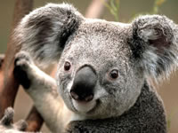
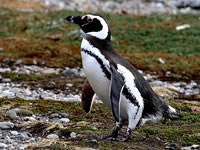
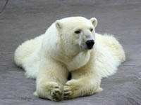
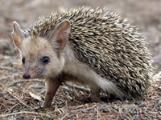
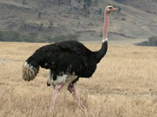

| Koala |

|
| Okaliptüs ağaçlarının yaprakları oldukça az protein içerirler ve çok liflidirler.
Sadece okaliptüs ağaçlarının bazı türleriyle beslenen koalalar bu konuda bir istisnadırlar. Yaprağın
istenmeyen bölümleri karaciğerde zehirden arındırılır ve vücuttan atılır. Bu türlü beslenme çok az
enerji verdiğinden koalalar günde 18 saat uyurlar. |
| Penguen |
 |
| Küçük kayalık penguenleri, karaya çıkmayı cesurca ama zor olan bir yoldan seçerler.
Büyük dalgalı ve kayalık deniz kenarlarından kıyıya çıkarlar. Hiçbir insan bu hırçın denizde birkaç
dakikadan fazla sağ kalamaz ya da bu dik yokuşu tırmanamaz. Ancak penguenler bunu düzenli olarak
yapmaktadırlar. |
| KutupAyisi |

|
| Kutup ayıları çetin koşullarda rahatlıkla yaşayabilmelerini sağlayan pek çok özelliğe
sahiptirler. Kutup ayılarının sarıya çalan beyaz renkli kürkleri tıpkı ördeklerde olduğu gibi, suyu
üzerinden kaydıracak bir yapıya sahiptir. Ayrıca tırnaklarının arası yarı uzunluğuna kadar yüzme zarı
ile kaplıdır. |
| Kirpi |

|
| Çöl oklu kirpisi aslanları bile öldüren savaş taktikleri kullanır. Aslan saldırdığında
kirpi hızla kaçar, fakat uygun bir yerde aniden durarak, vücudunun arka kısmını hafifçe kaldırıp
oklarını aslana yöneltir. Eğer aslan dişleriyle ısırarak kirpiyi yakalamaya çalışırsa, kirpinin okları
ağzına ve yanaklarına batarak, iyileşmesi olanaksız yaralar açar. Aslan hiçbir şey yiyemez hale gelir ve
bir süre sonra da ölür. |
| Devekuşu |
 |
| Tepeli deve kuşları Avusturalya'da yaşarlar. Erkekler sayıları 1 ile 3 arasında
değişen dişinin yumurtaları için kuluçkaya yatarlar. Kuluçkadan çıkan ve sayıları 18-20 olan yavrulara
da yine erkek deve kuşları 18 ay boyunca bakarlar. Deve kuşu Genellikle, 90 ile 130 kg ağırlığındadır,
bazı erkek deve kuşlarının ağırlıkları 155 kg'ye kadar çıkar. Erişkin erkeklerin tüyleri, çoğunlukla
siyahtır, kanatlar ve kuyrukta bazı yerler beyazdır. Dişiler ve genç erkekler, grimsi-kahverengidir.
Kanatlar, erkekler tarafından çiftleşme gösterilerinde kullanılır. Aynı zamanda civcivler için gölge
sağlar |
|
Devrim Mert Ciddi PiriReis Mesleki Ve Teknik Anadolu Lisesi
11/B Bilişim 7.10.2024
|